Coleção de projetos de BI e análise operacional: recebimento, armazenagem, expedição, inventário, classificação de estoque e capacidade de layout. Cada card abre o projeto, que roda direto no navegador, sem servidor.
Todos os nomes de pessoas, clientes, fornecedores, produtos e marcas foram substituídos por nomes fictícios (empresa inventada "Aurora Suplementos").
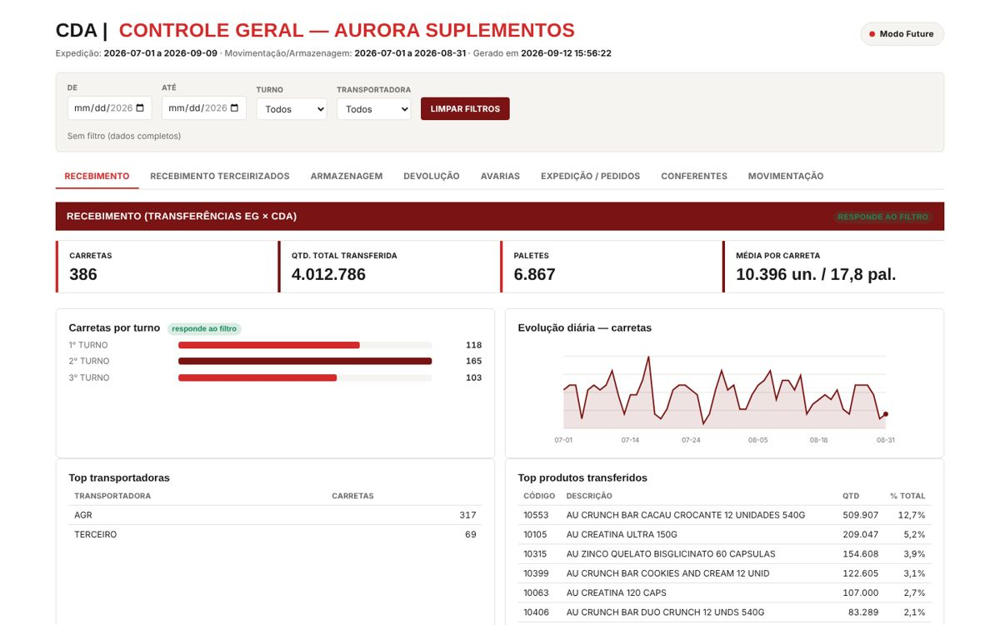
Dashboard principal do CD: recebimento, armazenagem, expedição, devoluções, avarias, conferentes e movimentação, com filtros por período, turno e transportadora e três temas visuais.
HTML · JavaScript · cubo de dados dia × dimensão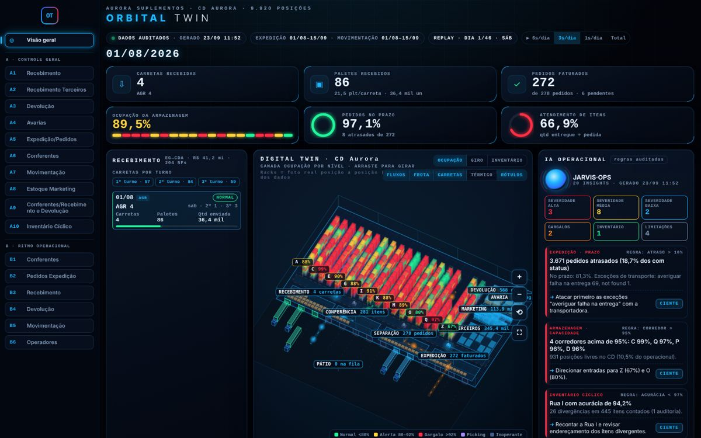
Gêmeo digital 3D do galpão com ocupação por nível, fluxo de carretas, replay diário e um painel de alertas automáticos ("IA operacional") por regras auditáveis.
HTML · SVG/Canvas · JavaScript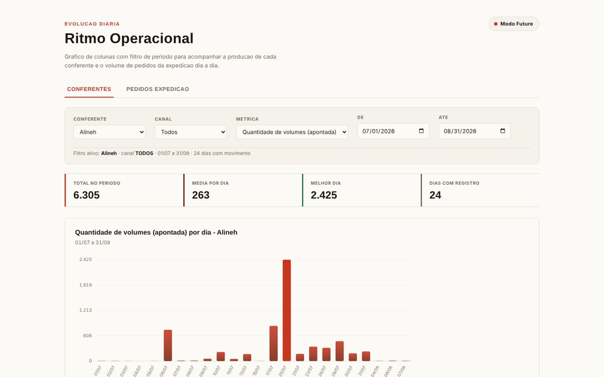
Evolução diária por conferente e atividade: expedição por canal, pedidos colocados e produtividade da equipe.
HTML · JavaScript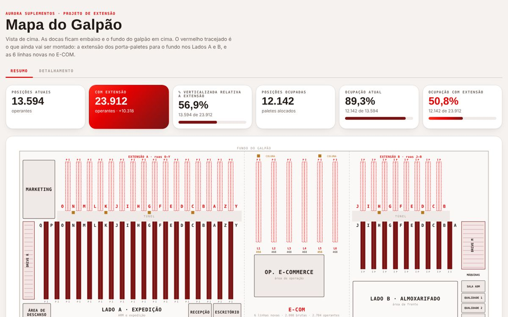
Planta baixa interativa com Lado A, E-COM e Lado B, simulador de ocupação e capacidade antes e depois do projeto de extensão.
HTML · SVG · JavaScript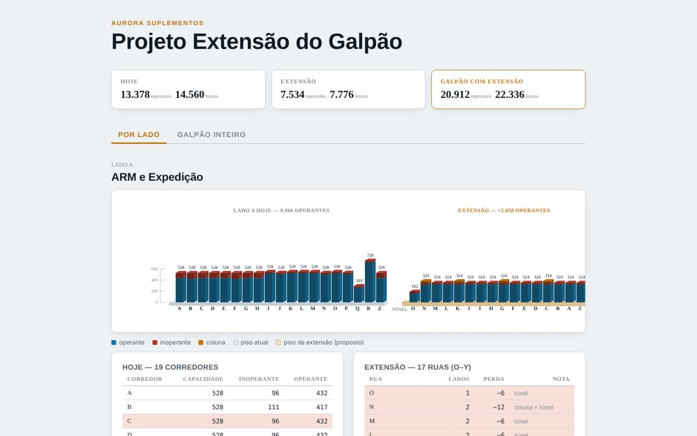
Maquete isométrica da extensão dos Lados A e B: capacidade bruta, vagas inoperantes (colunas e túnel) e operantes por rua.
HTML · SVG · JavaScript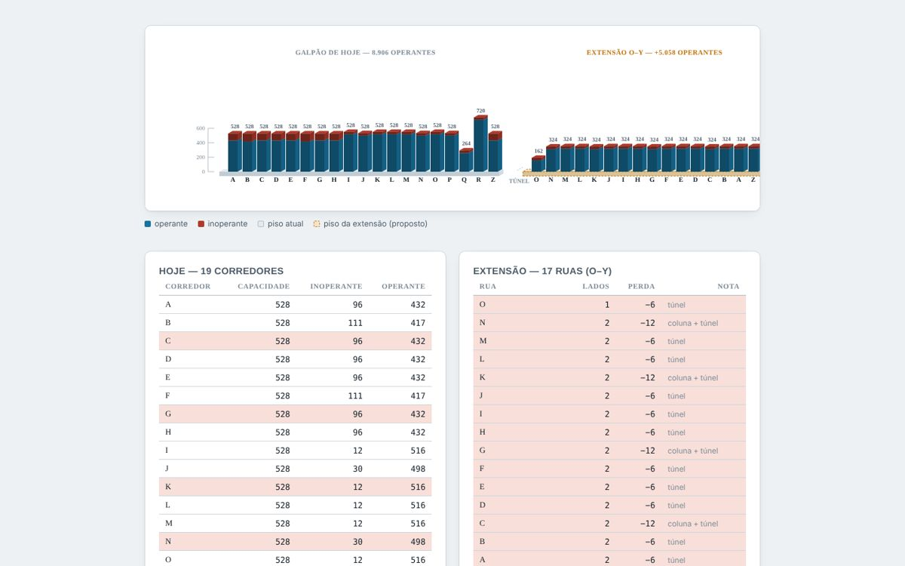
Versão inicial da maquete: 19 corredores atuais e 17 ruas de extensão, com regra de perda por coluna e túnel.
HTML · SVG · JavaScript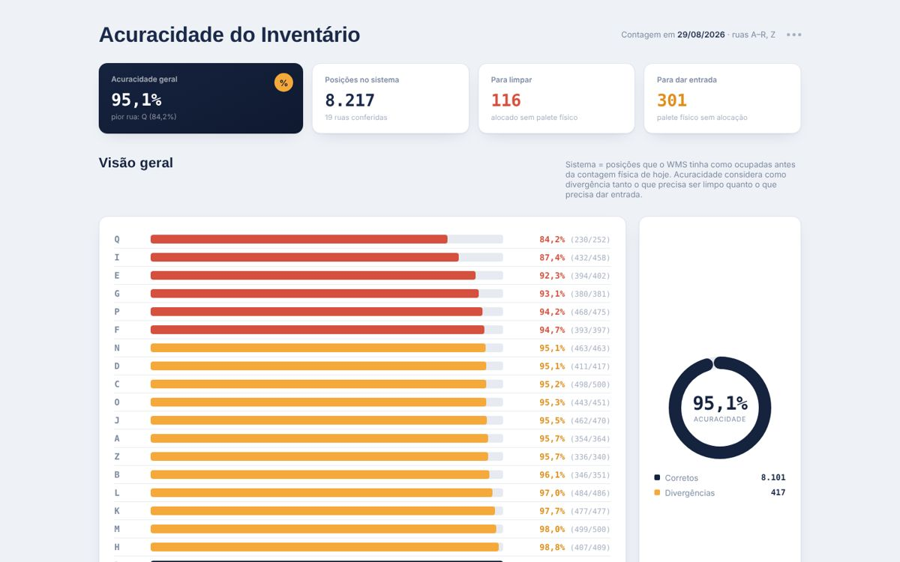
Acuracidade do inventário por rua (corretos ÷ (sistema + entrada)), com semáforo de meta, rosca geral e tabela de divergências.
HTML · JavaScript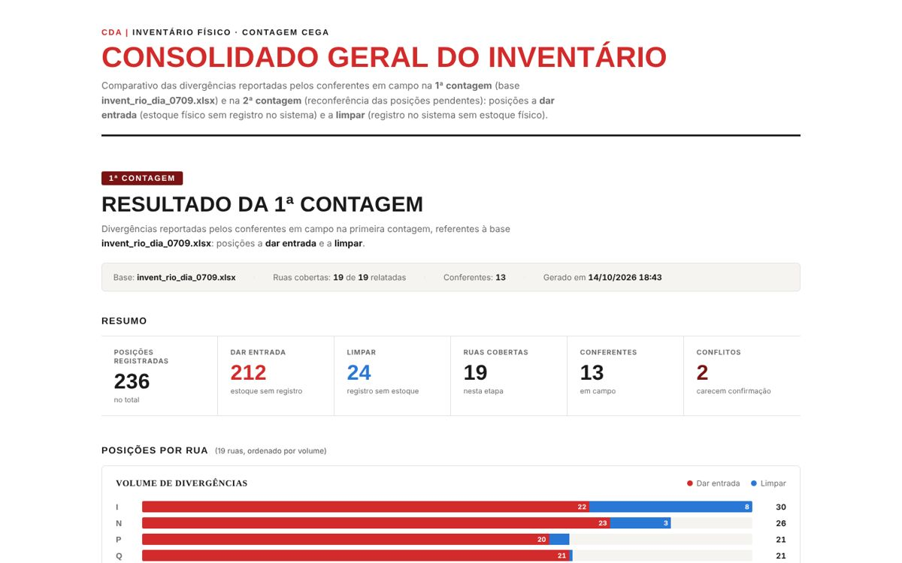
Consolidado de contagem cega: posições a dar entrada e a limpar, por rua e conferente, com detecção de conflitos e reconferência.
HTML · JavaScript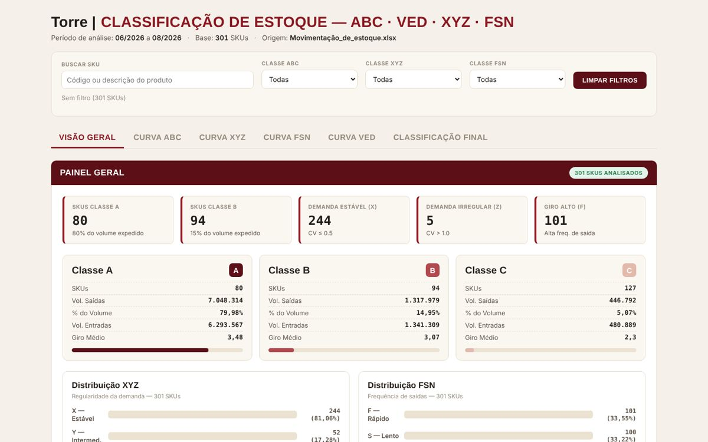
Classificação ABC / XYZ / FSN / VED dos SKUs: volume, variabilidade, giro e criticidade, com filtros e combinações de classe.
HTML · JavaScriptPainel mensal com visão geral, movimentação, operadores, devoluções (motivos, ofensor, plano de ação) e recebimento entre unidades.
HTML · Chart.jsMesmo painel no mês anterior, para comparação (variação líquida de estoque, devoluções e produtividade).
HTML · Chart.js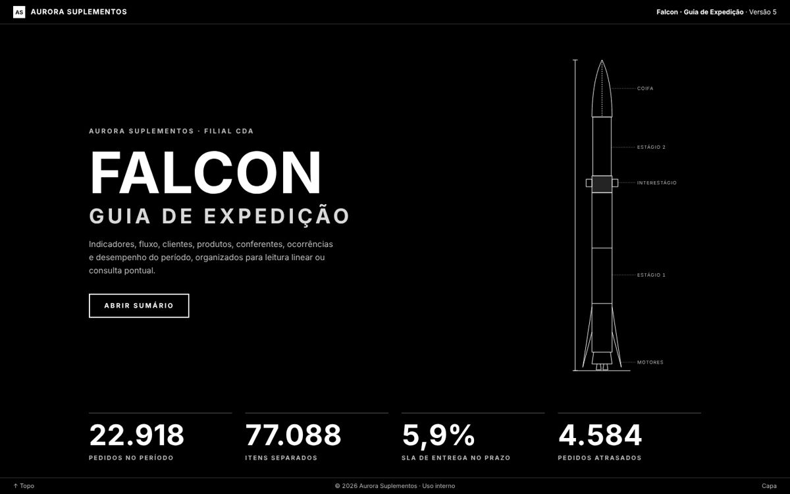
Guia de operação da expedição em formato de manual técnico: do pedido à entrega, com gráficos, SKUs, atrasos e plano de ação.
HTML · CSS · JavaScript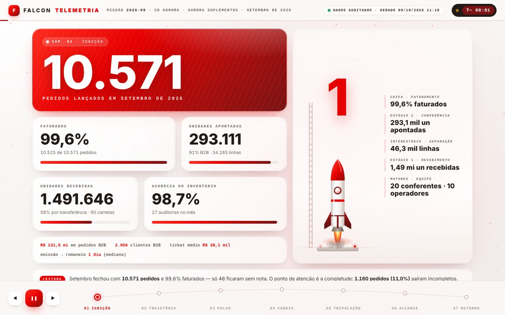
O resultado do mês contado como uma missão espacial, em 7 capítulos animados (Ignição, Trajetória, Pulso, Canais, Tripulação, Alcance, Retorno).
HTML · CSS · JavaScript · SVG · Web Animations API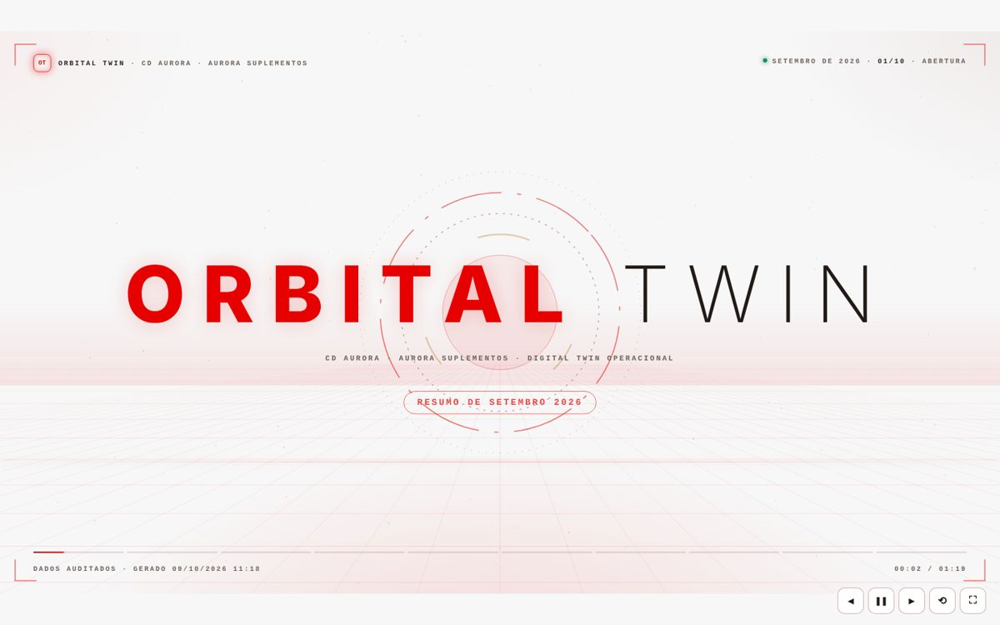
Resumo mensal exportável que alimenta o MotionG: indicadores do mês, canais, transportadoras, UFs e devoluções.
HTML · JavaScript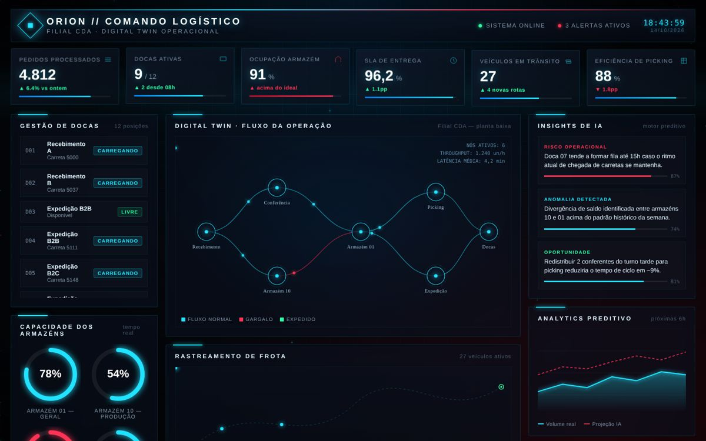
Protótipo de centro de comando com estética HUD: KPIs, docas, frota, gêmeo digital do fluxo e insights preditivos (dados simulados).
HTML · CSS · SVG · Canvas